About Marina:
Marina Ode is a SoCal Resident and has lived here her whole life. She feels very blessed and privileged to have called SoCal home for so long. She has had the pleasure of raising her daughter for 21 years; including being a homeschooling mom and teacher. She has done many part-time jobs throughout her life including being a Math tutor, teaching high school homeschool science along with teaching other college courses, and being a Pilates instructor among other things. She completed her Bachelor’s Degree of Biological Sciences in 2006, after attending a couple of different universities and colleges, and taking some time off to have and care for her daughter. She deeply enjoys studying how science reflects God’s magnificent creation.
Her adult life has been devoted to raising her daughter and pets, and pursuing her hobbies, interests and passions. Her main passion, though, is living for God and shining His Light and Love wherever she goes and in whatever she does. She is a positive person that surrounds herself with inspirational things, and encouraging people, in every aspect of her life. She is a firm believer in (with lots of hope for) making our world a better place for the future generations to come.
Her testimony
“I was born into a family that was catholic, but we received the gift of salvation through personal relationship with God through Christ in my younger years. True freedom is not found in religion but in relationship. Although I grew up in a Christian home, there was still hardships to deal with. Through it all, I have always thought of Jesus my Refugee and my Saving Grace. Then at the age of 18, shortly after I graduated from high school, was when I recommited my heart and life to Jesus Christ. I have traveled on this journey with God for many years. I have been growing to know the Love of God, which passes knowledge, towards others, as well as myself. I have led and written many bible studies throughout the years, both personal and in groups. The life of God has reignited my walk of faith in significant times throughout my journey. I have been grateful to pass on hope, help, health, healing, and freedom to others from what I’ve learned, and things I have gone through or continue to grow through. My passion is to impart the revelation of the present-tenseness of the living Christ in the here and now and as well as empowering others to come into a deeper and ongoing connection with God thereby enjoying an open door to the highest Heaven.”
~ Marina Ode
Here is Marina's senior portrait.
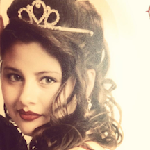
Marina at her senior prom, in 1994, as the prom queen, in the Marina Ballroom at the Disneyland Hotel.

Marina in front of Lower Yosemite Falls.
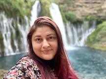
Here is Marina in front of another powerful and majestic waterfall, Burney Falls.
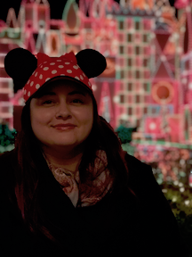
Marina in front of "it's a small world" ride and Disneyland Park.
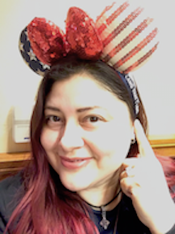
Marina wearing some patriotic mickey ears. She loves her country and Disneyland!
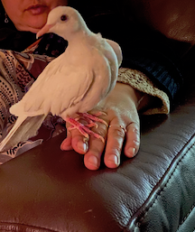
Marina has always been a bird person as she was raised by a bird breeding father. She has owned many birds throughout her life. Here is her pet dove, named Lovey Dovey.
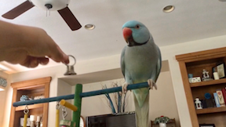
This is her Indian Ring Neck parrot, with some home decor in the background.
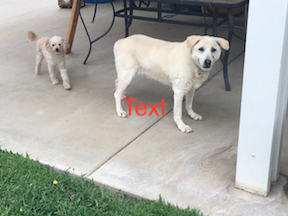
Marina has had the privilege of rescuing two dogs throughout her adult life. The small dog on the left is Teddy and the large lab on the right, who has since passed away, was named Snowie. She had been a family dog since the time Marina's daughter was 2 years old.
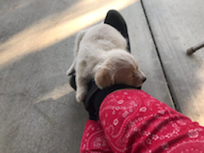
She has had the joy of raising puppies.
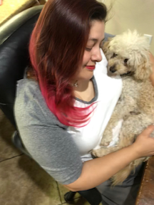
Marina with her dog, Teddy.
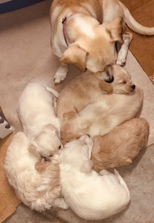
Here is the litter of puppies Marina raised. Of the six born, she kept two, another family kept two, and another family also kept two. It was not planned, but is very special as the families come together at the dogs' birthdays to celebrate each set of twins. It is also very special to be able to see the dogs as the grow, which is not common when one raises a liter of puppies.
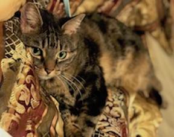
Here is a cat who lives with Marina, named Maze.
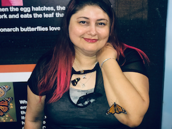
Here she is visiting a butterfly habitat. She loves the intricate designs of creation from the Creator!
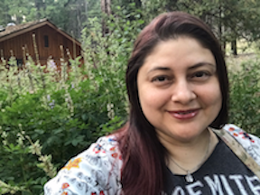
Here she is at the Mariposa Grove in Yosemite National Park.
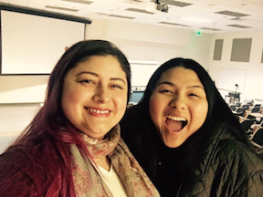
Here is Marina and her daughter visiting an old classroom in Cal Poly, which is her alma mater.
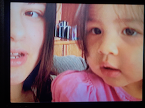
Marina became a new mother at 23 years of age. Here she is recording her daughter, Adaniah at around age 2, singing the alphabet on their old home recorder.
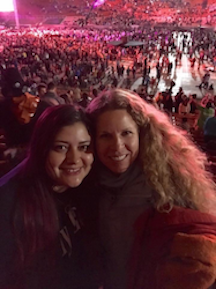
Here is Marina attending a concert with a good friend. She loves going to concerts with friends!

As she would say, "It’s all in the name, Marina!" She loves to be at the beach.